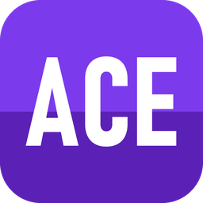

ACE Overlay
A live League scoreboard that sits on top of your game, with a profile for anyone in it.
- Press Ctrl+Shift+S in a League game (or click the purple ACE icon in your tray).
- Both teams: champions, levels, K/D/A, CS, items, who's dead, towers and dragons.
- Click a clan member's name for their rank, best champions and recent games.
- While it runs, your League game's full scoreboard (items, K/D/A, CS) shows live in the Live game panel on aceclan.lol. Only games with a clan member in them are sent.
- Starts with Windows and sits in your tray (turn that off from the tray menu).
- It keeps itself up to date: when there's a new version, an Update button appears.
Windows may warn you ("Windows protected your PC") because the program isn't from a big
publisher. Click More info then Run anyway. Nothing to install: it runs straight away.
Set League to Borderless or Windowed (Settings → Video → Window Mode), or the overlay
can't show on top. It only reads the game's own live data, the same way Riot allows other companion apps to.